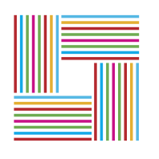

<nav class="navbar navbar-default">
  <div class="container-fluid">
    <div class="navbar-header">
        <!-- NOTE: add "navbar-inverse" class for an alternate navbar background -->
        <button type="button" class="navbar-toggle collapsed" data-toggle="collapse" data-target="#navbar">
          <span class="icon-bar"></span>
          <span class="icon-bar"></span>
          <span class="icon-bar"></span>
        </button>
      <a class="navbar-brand" href="#">
        
      </a>
    </div>
    <div id="navbar" class="navbar-collapse collapse">
      <ul class="nav navbar-nav">
        <li><a href="index.html">Home</a></li>
        <li><a href="about.html">About</a></li>
      </ul>
      <ul class="nav navbar-nav navbar-right">
        <li><a href="https://github.com/GCDigitalFellows/do-the-r-thing"><i class="fa fa-2x fa-github" aria-hidden="true"></i></a></li>
      </ul>
    </div><!--/.nav-collapse -->
  </div>
</nav>
